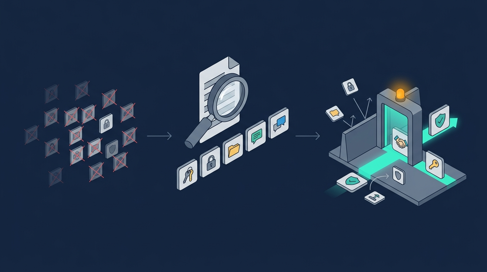

Contents
The problem
A browser extension is a small program with extraordinary reach. It can read and rewrite the content of every page the user visits, observe what is typed into login forms, and transmit data to any destination on the internet. It updates itself. It does most of this without a dock icon, a visible process, or an entry in most endpoint logs.
That combination — broad permissions, low visibility, silent operation — makes extensions one of the most under-managed categories of software in most environments. The trend has made it worse: the proliferation of browser-based and AI-assisted productivity tooling has driven a large increase in user-initiated installs, the majority of which are entirely legitimate requests.
The risk profile of an unvetted extension includes:
- Reading or altering content on any site, including internal administrative systems
- Capturing credentials as they are entered
- Exfiltrating browsing data to external infrastructure
- Changing behaviour silently through unattended auto-update
- Serving as a delivery vehicle for malware — fake AI assistants and crypto wallets are common lures
Not every malicious extension announces itself, and not every reputable extension stays reputable. Publisher reputation decays and ownership changes hands, so any control that only operates at the moment of installation will go stale quietly.
This document describes a general-purpose approach. It contains no environment-specific identifiers, queries, policy paths, or asset names, and is safe to reuse as a reference in any organisation.
The design decision: default-deny
The instinct is often to treat extension governance as a productivity-versus-security trade-off. The real problem is narrower: without a control, the decision to install is made by every individual user, in the moment, with no information and no review.
The consequential choice is to stop treating this as a blocklist problem. A blocklist only knows about threats that have already been observed and catalogued. An allowlist denies by default — nothing installs unless it has been explicitly reviewed and approved. New, unknown, and newly-compromised extensions are then blocked by design rather than by luck.

Layer 1 — Discovery
Nothing can be governed until it has been seen. The useful property is that Chromium-based browsers already store installed extensions on disk in each user profile, which means existing endpoint telemetry can discover them passively — no agent deployment, no new licence, no additional collection tooling.
Extensions live at a predictable location per profile:
%USERPROFILE%\AppData\Local\<browser>\User Data\Default\Extensions\<extension-id>\Each installed extension is represented by a stable unique identifier, which doubles as the key used by the policy layer in Layer 3.
Method
- Query existing endpoint file telemetry for activity beneath the
Extensionsdirectory path across all managed endpoints. - Extract the extension identifier from each observed path using a path-matching pattern.
- Retain host attribution alongside every identifier so findings can be traced back to specific machines.
- Deduplicate into a consolidated estate-wide inventory.
Expect noise. Multiple browser profiles, leftover directories from removed profiles, and sideloaded developer builds will all generate duplicates. Deduplicate on the identifier, keep the host list separately.
Discovery via file telemetry finds extensions that are present on disk. It will not find an extension that was installed and then removed, and it will not see extensions installed in a profile belonging to a user who has never synced or signed in. Both gaps are acceptable for allowlist construction, but worth stating explicitly.
Layer 2 — Risk enrichment
A raw list of extension identifiers is not actionable. An identifier such as nkbihfbeogaeaoehlefnkodbefgpgknn carries no information about what an extension does or whether it should be trusted. Every unique identifier discovered in Layer 1 must be resolved to human-readable metadata before any allow/deny decision can be defended.
| Field | Purpose |
|---|---|
| Extension ID | Stable identifier as observed from endpoint telemetry |
| Name | Published display name — something a reviewer can reason about |
| Description | Publisher's own statement of the extension's function |
| Risk indicator | Signal derived from description keyword screening and extension category |
| Marketplace resolution | Whether the identifier resolves to a public, verifiable listing |
| Source URL | Link to the public listing, for manual verification during review |
Review and decision
Reviewers sort every item into one of three buckets:
- Approved — legitimate business or productivity tooling with low-risk indicators: password managers, document and PDF utilities, accessibility tooling, and internally-issued security agents such as EDR or DLP browser components.
- Rejected — high-risk indicators, no legitimate business justification, unresolved identity, or a category the organisation does not permit.
- Pending review — requires follow-up with the requesting team before a decision is made.
The pending review state is more important than it first appears. Without a way to park a decision without silently resolving it in either direction, teams tend to over-block legitimate tooling or to lose confidence in the process altogether.
Treat "could not be resolved to any public marketplace listing" as a risk signal in its own right, not as a transient data-quality condition to retry. An identifier nobody can account for should not be approved by default because enrichment was inconclusive.
The enrichment step is mechanical and largely automatable. The review is the work, and it is where analyst judgement actually determines whether the allowlist is defensible. Tooling will not make this decision for you.
Layer 3 — Enforcement
Once an approved list exists it has to be enforced centrally. Both Chrome and Edge ship native policy templates — ADMX for policy, ADML for localisation — and both expose an ExtensionInstallAllowlist setting that permits installation of approved identifiers and blocks everything else.
Because these are native enterprise policy settings, the resulting control requires no end-user action and no third-party browser management agent.
Prerequisites
- Access to the Group Policy Management Console and the domain central store
- Chrome and Edge ADMX/ADML policy templates
- A reviewed list of approved extension identifiers from Layer 2
Procedure
- Copy the ADMX files into the domain SYSVOL policy definitions store, and the ADML files into the appropriate language folder (for example
en-US). - Confirm the templates appear under both Chrome and Edge in the Group Policy Management Console.
- Create or select a GPO. For both browsers, set
ExtensionInstallAllowlistto Enabled. - Add one approved extension identifier per line.
- Link the GPO to the target workstation OUs. Apply filtering for a phased rollout where the estate is large, and avoid linking to server OUs unless genuinely required.
ExtensionInstallAllowlist restricts what users may add. If the objective additionally includes mandating specific extensions centrally, that is a distinct setting — ExtensionInstallForcelist — and carries its own change-management implications. Treating them as one control is a common and costly mistake.
Validating enforcement
A control that has not been demonstrated is a hypothesis. Enforcement should be verified on a managed endpoint in both browsers, by attempting to install extensions that are deliberately absent from the allowlist.
Procedure
- Force policy refresh (
gpupdate /force) and restart the browser. - Confirm the policy is present and correctly scoped at
chrome://policyoredge://policy. - Attempt to install a non-approved extension from each browser's respective store.
- Confirm the installation is blocked at the point of download, and that the browser attributes the block to administrative policy rather than surfacing a generic error.
- Confirm approved extensions still install and function correctly.
What a correct result looks like
- Blocking occurs at installation, so unapproved extension code never executes. This is genuine default-deny, not a warning dialog.
- Both browsers independently apply their own policy, confirming correct template deployment and GPO linkage.
- Even widely used, reputable extensions are blocked unless explicitly approved — the clearest possible demonstration that the control is an allowlist and not a reputation filter.
- The browser surfaces a clear administrative notice naming the extension, giving users immediate feedback.
Operating it
The technical control is the straightforward half. What determines whether it is still in place and still correct in twelve months is the process around it.
- Request path — users need a known route to request an extension, with business justification attached. Record requester, business need, and reviewing decision.
- Service level — without a response-time commitment, teams route around the control rather than through it, and that circumvention will not appear in policy compliance reporting.
- Re-audit cadence — quarterly is a reasonable default. Extension risk decays silently, and an allowlist ages at the same rate.
- Pruning — allowlists grow without pressure to shrink. An allowlist nobody comprehends is a liability, because nobody can evaluate the next request against it.
Limitations & out of scope
- Managed estate only. This depends on Active Directory group policy reaching the device. Unmanaged or BYOD endpoints require a separate control.
- Users can disable policies. Chromium allows disabling
chrome://policyenforcement on their own device. On a properly locked-down estate this is itself blocked by policy, but it is a distinct control that must exist. - Directory-scoped installs. Administrator-scoped and externally-hosted extensions follow different policy paths and need separate verification.
- Force-install is not covered. Mandating extensions centrally is out of scope.
- Point-in-time discovery. File telemetry reflects current disk state, not historical installs.
- Risk indicators are heuristics. Enrichment produces signals for human review, not an automated verdict. An extension flagged low-risk is not thereby safe.
Summary
The combination that matters is two halves that reinforce each other: a technical control that prevents unapproved extensions from being installed at all, and an operational process to evaluate and onboard new ones safely when they are genuinely needed.
Either half alone tends to fail. A policy without a process becomes a helpdesk queue. A process without a policy becomes a document nobody reads.